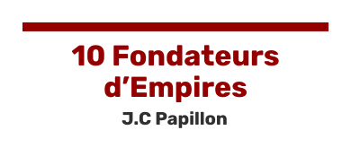
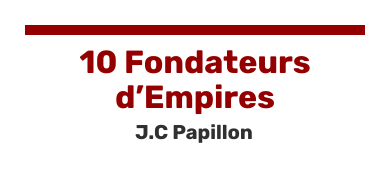

Il y a plusieurs raisons pour lesquelles j’ai tenu particulièrement à citer ces deux personnages emblématiques, présents parmi les autres exemples cités dans le livre que j’ai décidé de vous présenter. Ils sont tous les deux riches, puissants, à la tête de très grandes entreprises qualifiées par l’auteur d’”Empires”, mais ils sont également dans le même domaine d’activité, à savoir le numérique.
J’ai d’abord décidé de présenter ce livre car il est en accord complet avec l’ambition.
De plus, il permet de recentrer le sujet sur des exemples relativement concrets.
J’ai ensuité concentré ma lecture plus particulièrement sur Bill Gates et Jeff Bezos.

Bill Gates est pour moi une figure qui m’a totalement fasciné étant jeune mais qui m’a aussi très inspiré.
“Mais ce monsieur travaille sur un ordinateur toute la journée et il a beaucoup d’argent !” disais-je,
du haut de mes 10 ans. Jules, ce n’est pas si simple que ça.
En effet, à travers le livre de Jean Claude Papillon publié en 2002 et édité par “Management et Société”, le terme Empire représente parfaitement la notion de grande entreprise puissante qui sont chacunes propres de chaque personnage du livre. La frise chronologique est large : de 1800 à notre époque, de Louis Hachette à John Rockefeller en passant par Steve Jobs et Bill Gates à Jeffrey Bezos, les exemples d’ambitions devenues réalités sont larges.
À noter pour finir que le site n’aborde pas uniquement la notion d’argent, et fait remarquer que celle-ci n’est pas la valeur principale de démarrage. L’auteur a également une écriture optimiste à propos lorsqu’il raconte l’histoire des exemples. Il pousse également aux détails près leurs existences pour mieux les comprendre plutôt que de s’accorder uniquement sur des chiffres et sur l’entreprise en elle-même. Tout au long de la lecture nous gardons un aspect historique en s’appropriant la situation économique mondiale pendant les périodes situées. Notre regard ne s’appuie pas seulement sur les personnages.
Inspirez vous donc des plus grands, mais ne vous infligez pas un tare lorsque votre destinée ne ressemble pas à celles des leurs. Remarquez que le progrès n’a pas une seule courbe, la ligne de votre existence peut rester constante un certain moment comme prendre un virage serré. L’important reste de garder le cap. Restez sur la route de vos objectifs, gardez la map en tête.
Et si cet ensemble de fils pouvaient représenter parfaitement l’idée de la réussite ? En effet, tout le monde ne va pas succéder de la même manière. Pour certains, le chemin sera semé d’embûches, pour d’autres beaucoup moins. Les autres auront un début difficile, tandis que ce sera l’inverse pour vous... L’important est de trouver votre voie et de ne pas prendre le même chemin que les autres, faites vous confiance ! Ne reproduisez pas de schémas de réussite, créez le vôtre ! Bonne chance à tous ceux qui se lanceront après avoir vu cet article, nous nous retrouverons sûrement à l'arrivée.